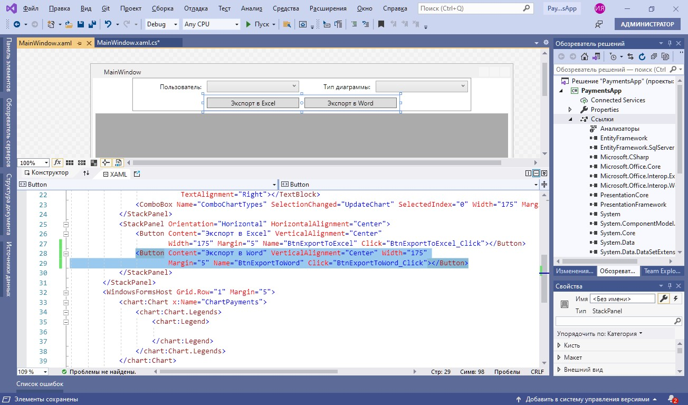
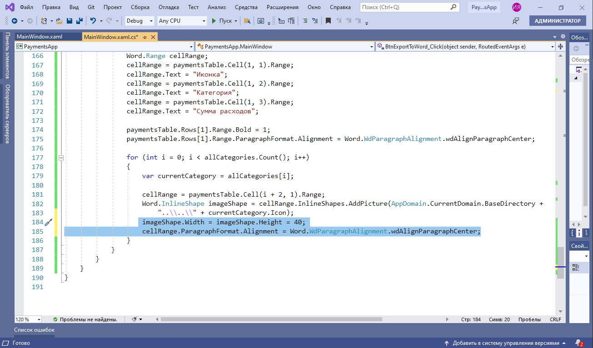
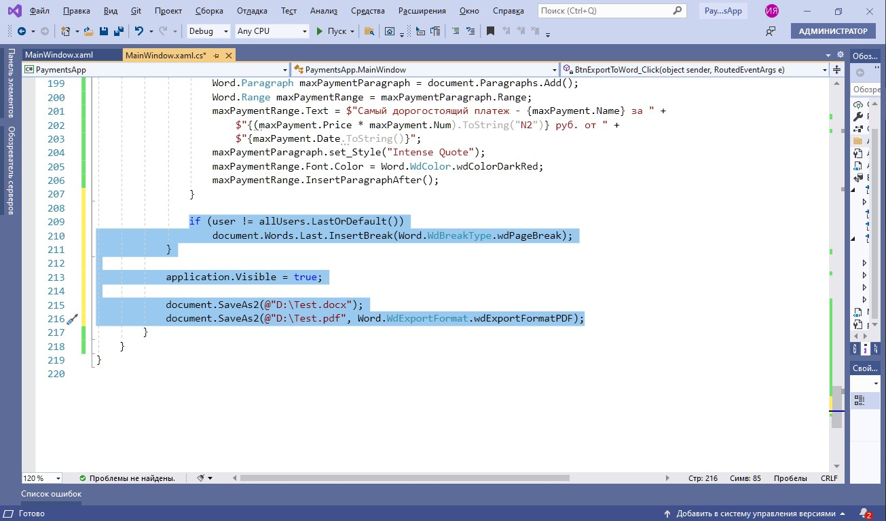
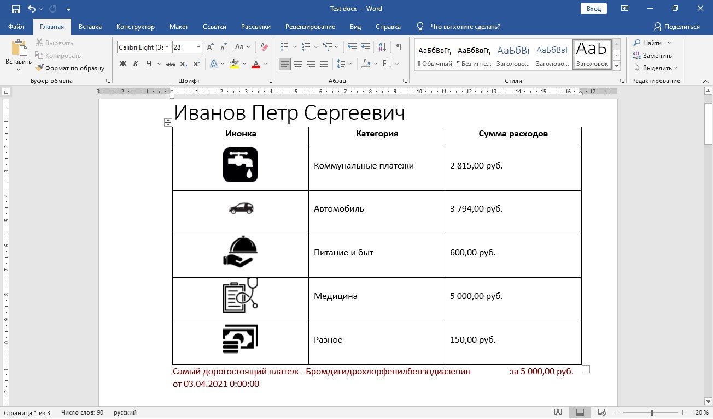

Демонстрация работы с документами Word в WPF
На данном занятии будет реализована возможность экспорта данных из приложения для визуализации расходов пользователей в документ Word. Расходы каждого пользователя будут экспортироваться на отдельную страницу, названием которой будет ФИО пользователя. Расходы будут просуммированы по категориям и представлены в виде таблицы. Под таблицей будет размещена информация о максимальном и минимальном платежах данного пользователя. Основные шаги построения приложения:
- Подготовительный этап
- Реализация экспорта в документ Word
- Завершение оформления документа Word
Подготовительный этап
1. Подключаем библиотеку для работы с Word
Важно
Для экспорта данных в Word используется библиотека InteropWord (Object Library), расположенная во вкладке COM
2. Добавляем кнопку экспорта

Важно
Экспорт данных в Word будет осуществляться с помощью кнопки «Экспорт в Word»
3. Подключаем пространство имен для работы с Word
Важно
Требуемое пространство имен подключается с помощью директивы using
Реализация экспорта в документ Word
1. Получаем список пользователей и категорий
Важно
Список пользователей и категорий выгружается из базы данных
2. Создаем новый документ Word
Важно
После создания экземпляра Word в приложение добавляется новый документ, с которым далее происходит работа
3. Создаем параграф для хранения названий страниц
Важно
Основной структурной единицей текста является параграф, представленный объектом Paragraph. Все абзацы объединяются в коллекцию Paragraphs, причем новые параграфы добавляются с помощью метода Add. Доступ к тексту предоставляет объект Range, являющийся свойством Paragraph, а текстовое содержание абзаца доступно через Range.Text. В данном случае для хранения ФИО каждого пользователя создается новый параграф
4. Добавляем названия страниц
Важно
В качестве названия выбирается имя пользователя, к которому применяется стиль «Title», после чего добавляется новый параграф для таблицы с платежами
5. Добавляем и форматируем таблицу для хранения информации о платежах
Важно
После создания параграфа для таблицы и получения его Range, добавляется таблица с указанием числа строк (по количеству категорий + 1) и столбцов. Последние две строчки касаются указания границ (внутренних и внешних) и выравнивания ячеек (по центру и по вертикали)
6. Добавляем названия колонок и их форматирование
Важно
Таблица состоит из трех колонок с названиями «Иконка», «Категория» и «Сумма расходов». Названия колонок выделяются жирным шрифтом и выравниваются по центру
7. Заполняем первую колонку таблицы
Важно
Положение ячейки заносится в переменную cellRange. Метод AddPicture() класса InlineShape позволяет добавить изображение в ячейку. Иконки категорий размещаются в корне проекта
8. Форматируем первую колонку таблицы

Важно
Для первой колонки устанавливаются длина, ширина, а также горизонтальное выравнивание по центру
9. Заполняем вторую и третью колонки
Важно
Сумма платежей приводится к нужному формату с указанием единиц измерения (руб.) непосредственно в коде
Завершение оформления документа Word
3. Делаем заключительные шаги

Важно
По завершении работы с данными пользователя добавляется разрыв страницы. Далее, разрешается отображение таблицы по завершении экспорта. Наконец, документ сохраняется в формате .docx и .pdf
4. Проверяем результат

Итоги
Вы познакомились с основными программными методами работы с документами Word в WPF.